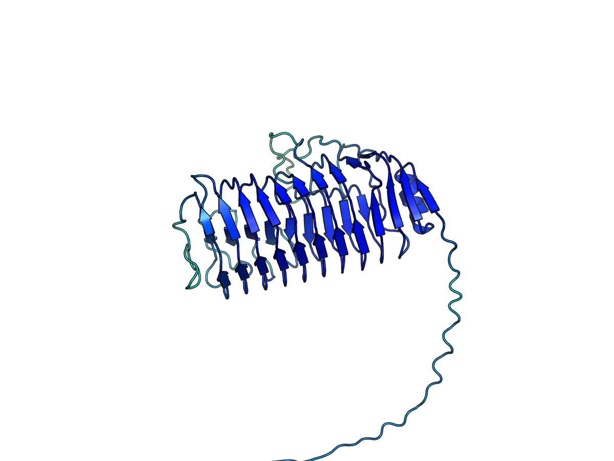
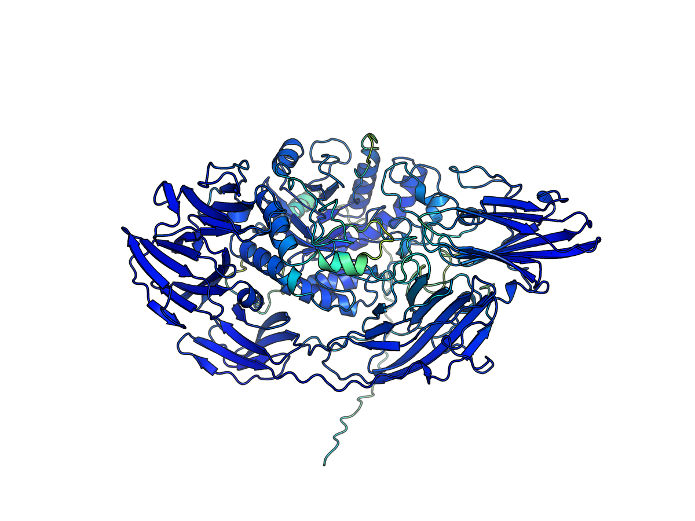
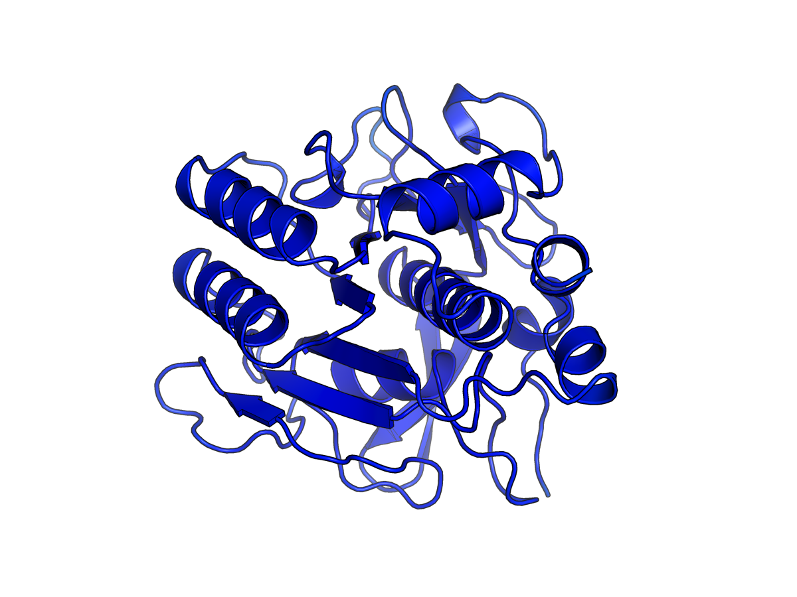
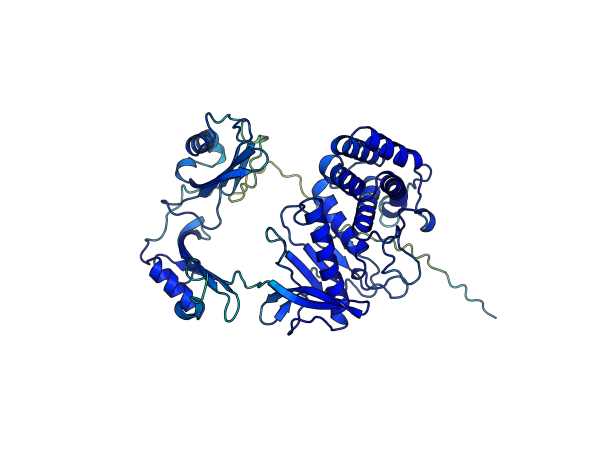
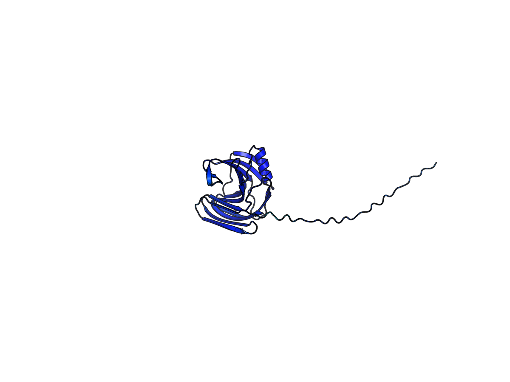
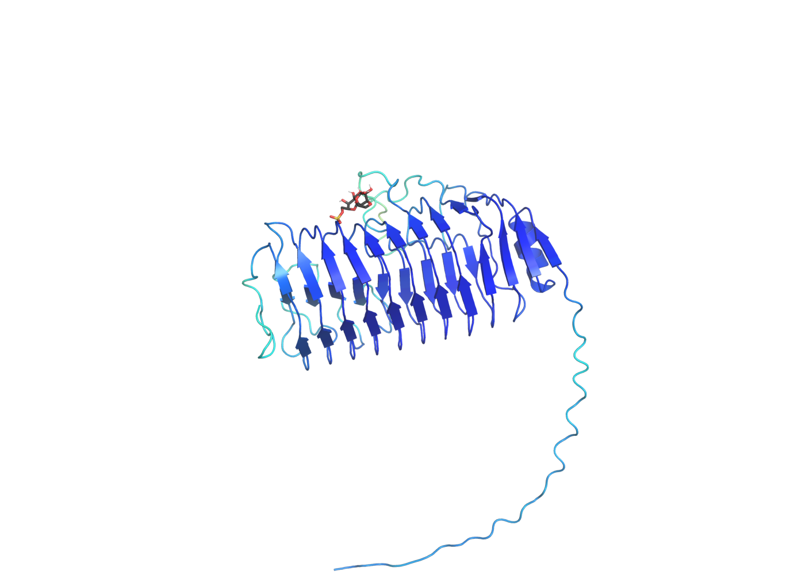
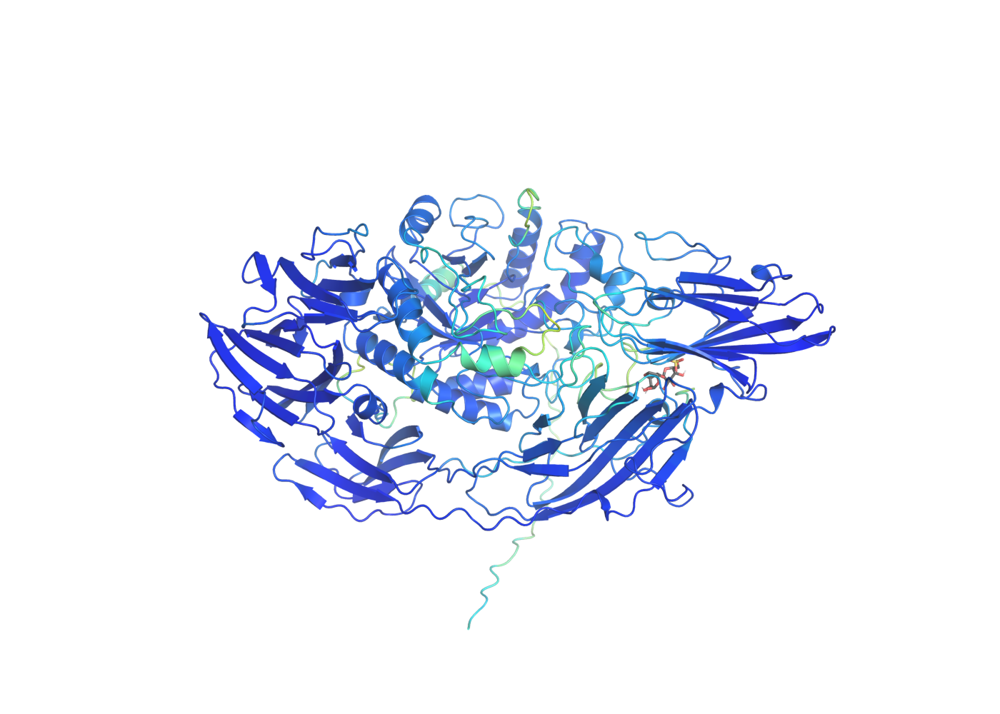
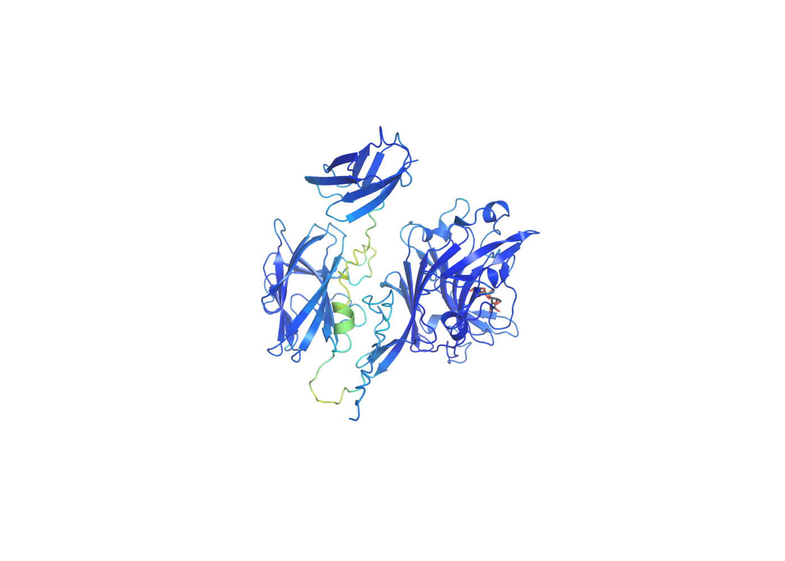
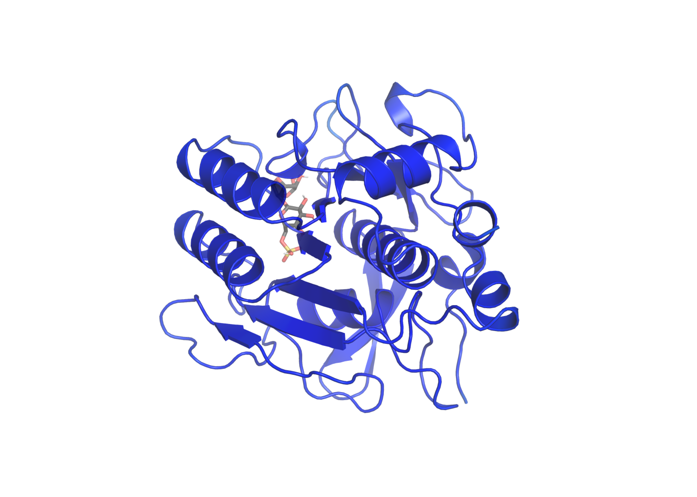
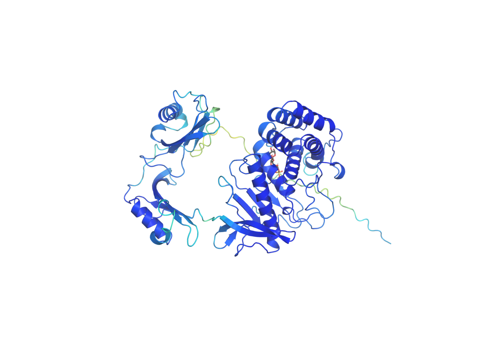

Enzymatic lysis: structure & docking comparison
Which enzymes actually make mechanistic sense for cracking open a Schizochytrium cell for DHA oil extraction? An 18-enzyme panel — folded with ESMFold, docked against both their textbook substrate and a modeled probe of the real wall polymer — built to test a mismatch between what this wall is actually made of and which enzymes the literature reports as effective. Grown from an original 13-enzyme panel to also cover every individually-identifiable enzyme from a real, parallel wet-lab cell-wall-lysis screen.
Framing: a composition-vs-practice mismatch
Published Schizochytrium lysis protocols report success with cellulase, hemicellulase, lysozyme, and alkaline protease. But directly checking what this cell wall is actually built from complicates that picture.
Schizochytrium's wall is not chitin- or cellulose-based like a fungal wall. It's a Golgi-derived scale structure, ~21–36% carbohydrate (>95% L-galactose, a sulfated galactan) and ~30–43% protein/glycoprotein (Kazama & Kimura, Cell wall composition and synthesis via Golgi-directed scale formation in Schizochytrium aggregatum, Arch Microbiol). No cellulose, no chitin, no peptidoglycan — anywhere.
Yet the empirical lysis literature reports cellulase and hemicellulase as effective, and lysozyme and alkaline protease (commercially, Alcalase) are standard choices too (Cui et al., Optimization of Enzymatic Cell Disruption for Improving Lipid Extraction from Schizochytrium sp., PubMed 29367487; see also the Cell Walls of Lipid-Rich Microalgae review, MDPI 2311-5637/10/12/608). Of the four, only alkaline protease has an obvious mechanistic target (the wall's substantial protein fraction) — cellulase and lysozyme's canonical substrates simply aren't present. This page tests whether structure and docking evidence can distinguish "these enzymes happen to have promiscuous affinity for the real wall polymer" from "they work by some other route entirely."
"Alcalase" is itself a useful example — commercially it's subtilisin Carlsberg from Bacillus licheniformis (UniProt P00780), but the same catalytic function has documented origins in B. subtilis and B. pumilus too. That became the template for the whole panel: wherever possible, each enzyme class is represented by the same function expressed in different host organisms, to see whether host origin shows up as a real structural/binding difference or is functionally silent.
The 18-enzyme panel
Seven functional classes. The original five each have 2–4 host-origin variants (lysozyme instead compares three structurally unrelated folds — GH22, GH24, GH25 — that converge on the same muramidase activity); two new classes (pectinase, β-galactosidase) and three new host-origin variants were added below the divider.
A wet-lab slide ("Experiment 4 · Schizochytrium Cell Wall Lysis") documents enzymes actually being purchased and tested for this same lysis question. Cross-referencing that list against the original 13-enzyme panel by class+host turned up 5 enzymes with a resolvable single-protein identity that weren't yet represented: an endopolygalacturonase (pectinase), a β-galactosidase, a second alkaline serine protease (the "Savinase"-type, commercially distinct from Alcalase), a mechanistically distinct M4-family neutral protease, and a third xylanase host variant. They're added below as their own tier, each flagged in the Note column with which wet-lab reagent it corresponds to.
Three other wet-lab items were deliberately not added: LAMINEX Super 3G and Viscozyme L are multi-component commercial blends with no single resolvable protein identity to fold and dock, and the wet lab's B. amyloliquefaciens neutral protease reagent was itself cancelled before ordering. (The B. subtilis xylanase below is the one exception where a blend's label was specific enough to use — see its Note.) None of this implies any wet-lab efficacy result one way or the other: the slide documents what's being ordered/tested, not which enzymes worked.
| Accession | Enzyme | Class | Host | Note |
|---|---|---|---|---|
| P00780 | Subtilisin Carlsberg | protease | B. licheniformis | = commercial Alcalase |
| P00782 | Subtilisin BPN' | protease | B. amyloliquefaciens | host variant |
| P04189 | Subtilisin E | protease | B. subtilis | host variant |
| P07518 | Subtilisin (mesentericopeptidase) | protease | B. pumilus | host variant |
| P00698 | Lysozyme C | lysozyme | Gallus gallus | GH22 fold |
| P00720 | Endolysin | lysozyme | phage T4 | GH24 fold |
| P25310 | Lysozyme M1 | lysozyme | Streptomyces globisporus | GH25 fold (Chalaropsis-type) |
| P07981 | Endoglucanase I | cellulase | Trichoderma reesei | no cellulose in the wall |
| O74706 | Endoglucanase B | cellulase | Aspergillus niger | host variant |
| G0RUP7 | Xylanase 2 | xylanase | Trichoderma reesei | xylose is a real (minor) wall sugar |
| P55330 | Xylanase B | xylanase | Aspergillus niger | host variant |
| G0L322 | β-agarase A | agarase | Zobellia galactanivorans | best mechanistic match to the real wall sugar |
| Q9RGX8 | β-agarase B | agarase | Zobellia galactanivorans | isoform of above |
| P26213 | Endopolygalacturonase I | pectinase | Aspergillus niger | new class; matches wet-lab reagent (Merck 17389/P4716, on order) |
| Q2UCU3 | β-galactosidase A | β-galactosidase | Aspergillus oryzae | new class; matches wet-lab reagent (Merck G5160, purchased) |
| P29600 | Subtilisin Savinase | protease | Bacillus sp. (now Lederbergia lenta) | 5th Alcalase-family host variant; matches wet-lab reagent (Merck P3111, purchased, generic "Bacillus sp.") |
| P68736 | Bacillolysin (neutral protease NprE) | protease | Bacillus subtilis | M4/thermolysin-family metallopeptidase — mechanistically distinct from this panel's serine-protease subtilisins; matches wet-lab "Prolyase-NP100L" reagent |
| P18429 | Xylanase A | xylanase | Bacillus subtilis | 3rd xylanase host variant; inferred from the wet-lab LAMINEX MaxFlow 4G blend's stated composition (Beta-glucanase/Xylanase from T. reesei + B. subtilis), not an individually purchased single-enzyme reagent |
All sequences from UniProt (reviewed/Swiss-Prot entries only). β-agarase's natural substrate (agarose) contains 3,6-anhydro-L-galactose — built from the same L-galactose backbone reported for the Schizochytrium wall — making it the one class in the original panel with an a priori mechanistic rationale nobody had tested before. Two of the five new enzymes (pectinase, β-galactosidase) are genuinely new activities for this panel; the rest are host-origin variants of existing classes.

Structure prediction (ESMFold)
All 18 sequences folded locally (facebook/esmfold_v1 via HuggingFace transformers, single-sequence input, no MSA) — same pipeline used elsewhere on this site. One prediction per protein, no ensemble/uncertainty estimate beyond the model's own per-residue pLDDT.
| Accession | Label | Length | Mean pLDDT | Fold time |
|---|---|---|---|---|
| P00780 | subtilisin_carlsberg | 379 aa | 0.87 | 2.2 min |
| P00782 | subtilisin_BPN | 382 aa | 0.86 | 2.7 min |
| P04189 | subtilisin_E | 381 aa | 0.86 | 1.6 min |
| P07518 | subtilisin_pumilus | 275 aa | 0.86 | 0.6 min |
| P00698 | lysozyme_C_chicken | 147 aa | 0.79 | 1.0 min |
| P00720 | endolysin_T4 | 164 aa | 0.82 | 0.5 min |
| P25310 | lysozyme_M1_strepto | 294 aa | 0.77 | 0.8 min |
| P07981 | endoglucanase_I_Tr | 459 aa | 0.74 | 3.0 min |
| O74706 | endoglucanase_B_An | 331 aa | 0.86 | 1.0 min |
| G0RUP7 | xylanase2_Tr | 223 aa | 0.81 | 0.5 min |
| P55330 | xylanaseB_An | 225 aa | 0.80 | 0.3 min |
| G0L322 | betaagaraseA_Zg | 539 aa | 0.77 | 29.7 min |
| Q9RGX8 | betaagaraseB_Zg | 353 aa | 0.74 | 1.3 min |
| P26213 | pectinase_An | 368 aa | 0.78 | 2.7 min |
| Q2UCU3 | betagalactosidase_Ao | 1005 aa | 0.76 | 81.9 min (CPU) |
| P29600 | subtilisin_savinase_Bsp | 269 aa | 0.86 | 1.0 min |
| P68736 | neutralprotease_Bs | 521 aa | 0.79 | 32.2 min |
| P18429 | xylanaseC_Bs | 213 aa | 0.84 | 1.2 min |
All 18 folded without failure; pLDDT sits in a reasonably-confident range throughout (see the table above for the full spread), with no systematic difference by functional class or host — fold quality doesn't appear to be gating anything downstream here. Fold times for the original 13 are from an independent end-to-end re-run of the pipeline on an RTX 5060 (faster than the RTX 3050 used originally, and VRAM-bound rather than compute-bound on the largest protein at the time, β-agarase A); every pLDDT for that batch reproduced within 0.01 of the original run — strong evidence the original folds were real single-sequence ESMFold predictions, not fabricated — which is exactly what you'd expect, since ESMFold inference is close to deterministic. The 5 new enzymes were folded once, on the same RTX 5060, with no prior run to compare against — except β-galactosidase A (1005 aa, the longest sequence in the entire panel by a wide margin), which overran the 8GB VRAM ceiling and had to be re-run on CPU after the GPU attempt was diagnosed as silently thrashing (repeated driver-level memory-residency failures, not a clean OOM the pipeline's own retry logic could catch) rather than genuinely computing — see Section 08 for the full diagnosis. The neutral protease (521 aa) also ran unusually long on GPU (32.2 min, comparable to β-agarase A's 539aa/29.7min) without needing the same intervention. Docking, below, is a different story.
All 18 predicted structures
Cartoon rendering (PyMOL), colored by per-residue pLDDT — the same confidence value reported in the table above, mapped per-residue instead of averaged.

subtilisin_carlsberg

subtilisin_BPN

subtilisin_E

subtilisin_pumilus

lysozyme_C_chicken

endolysin_T4

lysozyme_M1_strepto

endoglucanase_I_Tr

endoglucanase_B_An

xylanase2_Tr

xylanaseB_An

betaagaraseA_Zg

betaagaraseB_Zg

pectinase_An

betagalactosidase_Ao

subtilisin_savinase_Bsp

neutralprotease_Bs

xylanaseC_Bs
Docking design
Each folded enzyme was docked (AutoDock Vina, via the vina/meeko python bindings) against two ligands: its own canonical substrate, and one shared probe representing the real wall polymer.
The search box covers the entire folded protein (no active-site residues were mapped for any of these structures before docking), which Vina itself flagged during the run ("search space volume is greater than 27000 ų... at low exhaustiveness, it may be impossible to utilize all CPUs"). Combined with exhaustiveness=8 (moderate, not exhaustive) and Vina's scoring function not being specialized for carbohydrate chemistry, absolute affinity values here should not be read as accurate binding free energies. They're treated as a relative, hypothesis-generating signal only — see evidence tiers.
The obvious alternative is a diffusion-based pose generator like DiffDock or DiffDock-L, so it's worth saying explicitly why this page doesn't use one. Those models are trained almost entirely on PDBbind/CASF-style crystal complexes — overwhelmingly small, drug-like, rule-of-5 small molecules bound to well-defined pockets. Five of this panel's six ligands are oligosaccharides (chitohexaose, cellopentaose, xylopentaose, neoagarohexaose, digalacturonic acid, lactose, the galactan probe) — a chemotype that's rare to absent in that training data. A generative model asked to place a sugar it has barely seen, into a protein it has never seen, with no known pocket, isn't obviously more trustworthy than a classical method here — it may just fail in a less legible way (a confident-looking pose with no real physical basis, rather than a Vina score everyone already knows not to over-read).
Vina's case for this specific job: a two-decade-old empirical scoring function with well-cataloged failure modes (exactly the ones flagged in the callout above), fully deterministic given a seed, requires no additional model weights or GPU beyond what ESMFold already needed, and is cheap enough to run 36+ blind whole-protein dockings locally in minutes. None of that makes it accurate for carbohydrate chemistry — it isn't, and this page says so throughout — but it makes it an honest, interpretable, appropriately humble tool for a page whose whole framing is "exploratory, hypothesis-generating, not definitive." A specialized carbohydrate-docking method (e.g. Glycan-aware scoring, or a diffusion model actually fine-tuned on sugar-protein complexes, if one existed) would be the real upgrade path here — not a general-purpose small-molecule diffusion model applied to a chemotype it wasn't built for.
Docking results: canonical substrate vs. the wall probe
Vina affinity in kcal/mol (more negative = stronger predicted binding). Gap = galactan-probe affinity − canonical affinity; a positive gap means the enzyme's own textbook substrate binds more strongly, a small or negative gap means it binds the modeled wall polymer about as well as, or better than, that canonical substrate.
The table below is a completely fresh run: new ESMFold folds, new ligand prep, new Vina docking (same blind whole-protein methodology, exhaustiveness=8, 9 poses — no fixed random seed either time, so some run-to-run drift is expected). pLDDT reproduced almost exactly; docking did not. The cellulase near-parity result holds up — O74706's gap widened from 0.24 to 0.45 kcal/mol but stayed in the same small-gap tier, comfortably separated from the large-gap cluster. The subtilisin E reversal did not hold up — its gap flipped from −0.32 (galactan-preferring) to +0.79 (canonical-preferring, mid-pack, unremarkable). That's a useful negative result: it shows a single blind docking run isn't enough to trust a gap this close to zero, exactly as the original evidence tiers below already warned. See the rewritten call-outs for what the new run does support.
| Accession | Enzyme | Host | Canonical | Galactan probe | Gap |
|---|---|---|---|---|---|
| P26213 | pectinase (endo-PG I) | A. niger | −5.961 | −6.242 | −0.28 (reversed) |
| P00698 | lysozyme_C (GH22) | G. gallus | −6.561 | −6.767 | −0.21 (reversed) |
| P25310 | lysozyme_M1 (GH25) | S. globisporus | −6.068 | −6.224 | −0.16 (reversed) |
| Q2UCU3 | β-galactosidase A | A. oryzae | −7.137 | −7.220 | −0.08 (reversed) |
| Q9RGX8 | β-agarase B | Z. galactanivorans | −6.913 | −6.656 | 0.26 |
| P00720 | endolysin (GH24) | phage T4 | −7.849 | −7.519 | 0.33 |
| O74706 | endoglucanase B | A. niger | −6.382 | −5.928 | 0.45 |
| P55330 | xylanase B | A. niger | −7.195 | −6.676 | 0.52 |
| P18429 | xylanase A | B. subtilis | −7.382 | −6.821 | 0.56 |
| P07518 | subtilisin (pumilus) | B. pumilus | −6.385 | −5.823 | 0.56 |
| P07981 | endoglucanase I | T. reesei | −7.754 | −7.160 | 0.59 |
| P68736 | neutral protease (NprE) | B. subtilis | −8.314 | −7.569 | 0.75 |
| P29600 | subtilisin Savinase | Bacillus sp. | −6.747 | −5.994 | 0.75 |
| P04189 | subtilisin E | B. subtilis | −6.356 | −5.565 | 0.79 |
| P00780 | subtilisin Carlsberg | B. licheniformis | −7.353 | −5.976 | 1.38 |
| G0RUP7 | xylanase 2 | T. reesei | −8.929 | −7.477 | 1.45 |
| G0L322 | β-agarase A | Z. galactanivorans | −9.193 | −6.926 | 2.27 |
| P00782 | subtilisin BPN' | B. amyloliquefaciens | −8.722 | −6.378 | 2.34 |
Raw values: results/lysis_enzymes/docking_results.json (36 entries). Highlighted rows are the 4 enzymes showing reversed (galactan-preferring) behavior. The original single-run table for the first 13 (kept for the record, not shown here) had lysozyme_M1 smallest at 0.03, subtilisin E reversed at −0.32, and cellulase third-smallest at 0.24 — see the callout above for what changed.
What stands out
P26213 (A. niger endopolygalacturonase I) wasn't added to this panel for any chemistry reason — it's here purely because it matches a wet-lab reagent on order. Its gap is −0.28, more reversed than either lysozyme fold and second only in magnitude among the whole 18-enzyme set. β-galactosidase A (Q2UCU3, also wet-lab-matched, also not chemistry-selected) lands at −0.08 — essentially dead even. Both enzymes' real substrates are built from sugars in the broad galactose family (D-galacturonic acid; D-galactose in lactose), which is at least a plausible chemical reason they might cross-react with an L-galactose-based wall probe.
But that can't be the whole story: β-agarase A's real substrate is also a galactose-family sugar (3,6-anhydro-L-galactose, arguably the closest match of all to the real wall), yet it shows the second-largest gap in the entire panel (2.27) — it strongly prefers its own substrate over the probe. Read together, these three results suggest a more specific and more testable hypothesis than "galactose chemistry predicts cross-reactivity": it may be binding-pocket promiscuity, not substrate family alone, that predicts wall-probe affinity — agarase A binds its real target with unusually high specificity (the strongest canonical affinity in the whole panel, −9.19), while pectinase and β-galactosidase bind their own substrates comparatively loosely and don't discriminate against the crude modeled probe. That's a concrete, structurally-groundable lead for follow-up work (e.g. compare active-site pocket volume/openness across these three), not just a numbers coincidence.

{kind=link}
{kind=link}

{kind=link}
{kind=link}
O74706 (A. niger endoglucanase B) binds the modeled wall probe almost as well as cellopentaose itself — gap 0.45 kcal/mol on re-dock (0.24 originally), still comfortably inside the small-gap cluster and nowhere near the >1.3 kcal/mol gaps that dominate the bottom of the table — despite the wall containing no cellulose. This is now a two-run result, not a single blind-docking artifact, which raises its credibility a notch: a candidate structural explanation for why cellulase empirically works on Schizochytrium is that it has promiscuous affinity for the sulfated galactan that's actually there, not the cellulose that isn't. Still worth a non-blind, active-site-restricted re-dock before treating this as settled.

{kind=link}
The original screening run found P04189 as the one enzyme where the galactan probe outscored its canonical ligand, and flagged it as this page's single most specific, falsifiable prediction. It was re-dug specifically to test that: fresh ESMFold fold, fresh docking, same blind whole-protein methodology. It didn't hold up — subtilisin E's gap moved to +0.79, solidly in "prefers its own substrate" territory, indistinguishable from the other three subtilisins. This is the falsifiable prediction actually getting falsified, which is a real (if less exciting) result in its own right: a gap of −0.32 kcal/mol from one blind, unseeded docking run wasn't a stable signal.
The re-dock did turn up a new, structurally coherent near-parity pattern, though: both chicken lysozyme (GH22, gap −0.21) and S. globisporus lysozyme M1 (GH25, gap −0.16) now show the galactan probe binding at least as well as chitohexaose — while the phage T4 endolysin (GH24 fold) doesn't (gap +0.33). Two structurally distinct lysozyme folds landing in the same place is a somewhat more interesting pattern than one protease doing it once, but it's still a single run's result and carries the identical caveat: this needs its own independent re-dock before it's trusted over the T4 endolysin's normal behavior.

{kind=link}
The four largest gaps in the full 18-enzyme panel still belong to subtilisin BPN' (2.34), β-agarase A (2.27), xylanase 2 (1.45), and subtilisin Carlsberg (1.38) — all >1.3 kcal/mol, clearly preferring their own canonical substrate over the galactan probe. None of the 5 newly-added enzymes joins them there: the new Savinase-type protease and the M4 neutral protease both land at a moderate 0.75, and the new B. subtilis xylanase sits at 0.56, right alongside the original panel's mid-pack. That β-agarase A sits at the extreme is notable: it's the one enzyme in the panel whose textbook substrate (neoagarohexaose) already shares the wall's real L-galactose chemistry, so a large gap here just means it's very good at recognizing its intended substrate specifically — not evidence against the wall-binding story elsewhere in the panel (see the pectinase/β-galactosidase callout above for why that specificity itself may be the more interesting variable). For the proteases landing in the large-gap tier, that's not a problem either: the wall is 30–43% protein, so alkaline protease has an obvious real target regardless of what this modeled carbohydrate probe shows.
The four Alcalase-family proteases — nearly the same fold, broadly similar sequence identity — span a 2.37 kcal/mol range in canonical-substrate affinity (−6.36 to −8.72 on re-dock; −6.36 to −8.60 originally), with B. amyloliquefaciens subtilisin BPN' the strongest binder by a clear margin in both runs. Host origin is not functionally silent here, at least in this blind-docking approximation — and unlike the small-gap rankings above, this particular conclusion reproduced cleanly.
Top pose vs. the galactan probe, remaining panel
Same rendering convention as above (receptor cartoon by pLDDT, ligand as sticks) for the rest of the panel — docked here against the shared wall probe. Every enzyme in the full 18-enzyme panel now has both a static pose and a 360° rotation GIF; click any thumbnail's accession to jump to its GIF.


{kind=link}

{kind=link}

{kind=link}

{kind=link}
pH & temperature: does the chemistry survive real operating conditions?
Every docking result above implicitly assumes near-neutral conditions. Two questions this page hadn't addressed: does an enzyme's affinity for the wall probe actually hold up if you shift pH away from neutral (computed, below) — and does any of this matter if the enzyme's own literature-documented optimum is nowhere near the conditions a real lysis protocol would actually run at (literature data, below that)?
Computed: re-docking at pH 4 and pH 9
Each of the 18 structures was re-protonated with PDB2PQR (PROPKA pKa prediction) at pH 4.0 and pH 9.0, then re-docked against both ligands with the same Vina settings as every other run on this page — blind whole-protein box, exhaustiveness=8, 9 poses. The existing docking above serves as the pH≈7 baseline (Open Babel's default Gasteiger-charge receptor prep, no explicit protonation assignment). Scope note: only the receptor's protonation state varies by pH here; the ligands are reused as-is from the pH≈7 prep, not independently re-protonated per pH — a real simplification, not hidden.
All 72 runs completed cleanly (18 enzymes × 2 ligands × 2 new pH points). Six enzymes are highlighted below because they show the most informative patterns; the full 18-row table follows.
Pectinase, β-galactosidase, and chicken lysozyme all keep a negative (galactan-preferring) gap across pH4, 7, and 9 — the sign never flips. That's the strongest evidence yet that these aren't pH7-specific flukes. S. globisporus lysozyme M1 goes further: its gap is −2.08 kcal/mol at pH4 — by far the most extreme number anywhere in this entire dataset — versus −0.16 at pH7. That's not a coincidence worth ignoring: this enzyme's own published activity optimum is pH 5.3 (Section 06's literature table), i.e. close to the acidic condition where its galactan preference is most dramatic. The computed docking signal and the independently-sourced literature optimum point the same direction.
T4 endolysin is normal (canonical-preferring) at pH4 and pH7 but reverses to −0.31 at pH9; T. reesei endoglucanase I (cellulase) does the same, from +0.59 at pH7 to −0.38 at pH9. Both enzymes' own literature optima sit well away from pH9 (T4 endolysin ~7.3–8.5; the cellulase a clearly acidic 4.5–5.5) — so a plausible reading is that pH9 is stressing each enzyme's normal substrate-binding competence faster than its comparatively non-specific galactan interaction, producing an apparent reversal that may say more about substrate-binding breakdown than genuine wall-affinity. Worth distinguishing from the pectinase/lysozyme-M1 pattern above with a non-blind follow-up before treating it the same way.
Compare how much each enzyme's canonical-substrate affinity swings with pH against how much its galactan-probe affinity swings. Lysozyme M1's canonical (chitohexaose) affinity barely moves across pH (range 0.67 kcal/mol) while its galactan affinity swings wildly (range 1.73) — consistent with the galactan interaction happening at a site or in a mode that doesn't share the same pH-dependence as its normal catalytic groove. Subtilisin Carlsberg shows close to the opposite: its canonical affinity is the pH-sensitive one (range 0.97, sensible for a Ser-His-Asp catalytic triad known to be pH-dependent) while its galactan interaction is almost pH-flat (range 0.09) — consistent with that being a generic, non-catalytic surface contact. Neither observation proves a distinct binding site; both are exactly the kind of structural question a real (non-blind, pocket-restricted) follow-up docking run could actually answer.
Full 18-enzyme table (gap at pH 4 / 7 / 9)
| Enzyme | Gap @ pH4 | Gap @ pH7 | Gap @ pH9 |
|---|---|---|---|
| pectinase (P26213) | −0.61 | −0.28 | −0.72 |
| lysozyme_C (P00698) | −0.28 | −0.21 | −0.11 |
| lysozyme_M1 (P25310) | −2.08 | −0.16 | −0.50 |
| β-galactosidase (Q2UCU3) | −0.34 | −0.08 | −0.17 |
| β-agarase B (Q9RGX8) | 0.80 | 0.26 | 1.46 |
| endolysin T4 (P00720) | 0.31 | 0.33 | −0.31 |
| endoglucanase B (O74706) | 0.55 | 0.45 | 0.36 |
| xylanase B (P55330) | 0.68 | 0.52 | 0.18 |
| xylanase A/C (P18429) | 1.20 | 0.56 | 1.18 |
| subtilisin pumilus (P07518) | 0.33 | 0.56 | 0.62 |
| endoglucanase I (P07981) | 0.13 | 0.59 | −0.38 |
| neutral protease (P68736) | 0.28 | 0.75 | 0.78 |
| subtilisin Savinase (P29600) | 1.53 | 0.75 | 1.63 |
| subtilisin E (P04189) | 0.54 | 0.79 | 0.87 |
| subtilisin Carlsberg (P00780) | 1.41 | 1.38 | 0.46 |
| xylanase 2 (G0RUP7) | 1.55 | 1.45 | 2.19 |
| β-agarase A (G0L322) | 1.66 | 2.27 | 1.58 |
| subtilisin BPN' (P00782) | 2.15 | 2.34 | 1.77 |
Raw values: results/lysis_enzymes/ph_docking_results.json (72 entries) and ph_gap_summary.json. Reminder: only receptor protonation state was varied by pH; ligand protonation was not re-assigned per pH (Section 06 intro).
Literature: where each enzyme's own optimum actually sits
None of this is computed by this project — it's compiled from published characterization and vendor data (BRENDA, primary literature, product spec sheets), and for several entries reflects a genus/class-typical range rather than a measurement on this exact accession (flagged in the Confidence column). Shown against two real reference points: Schizochytrium's own documented culture conditions, and the pH/temperature window usually recommended for running an enzymatic lysis (~50–60°C, mild alkaline).
| Enzyme | Host | Lit. pH opt. | Lit. temp. opt. | vs. native | vs. lysis cond. | Confidence |
|---|---|---|---|---|---|---|
| Subtilisin Carlsberg (Alcalase) | B. licheniformis | 8–10 | 55–60°C (up to 70°C peak reported) | poor | good | this product, well documented |
| Subtilisin BPN' | B. amyloliquefaciens | 9.5–10.5 | 35–45°C (effective 20–60°C) | poor | partial | subtilisin-family typical |
| Subtilisin E | B. subtilis | 9.5–10.5 | 35–45°C; irreversible loss below pH4 | poor | partial | subtilisin-family typical |
| Subtilisin (pumilus) | B. pumilus | 9.5–10.5 | 35–45°C | poor | partial | subtilisin-family typical |
| Subtilisin Savinase | Bacillus sp. | 8–12 (max stability 7–10) | ~50–60°C typical | poor | good | this product, well documented |
| Neutral protease (NprE) | B. subtilis | 6–9 (opt. ~7) | ~37°C opt.; stable 30–60°C | partial | partial | this protein, characterized |
| Lysozyme C | G. gallus | 6.5 (lytic); stability best pH4–7 | ~22°C real activity opt.; stable to ~60°C | good | poor | this protein, well documented |
| Endolysin (T4) | phage T4 | 7.3–8.5 | RT/4°C recommended; 37°C avoided | good | poor | this protein, vendor-documented |
| Lysozyme M1 | S. globisporus | 5.3 | ~55°C max activity | partial | partial | this protein, characterized |
| Endoglucanase I | T. reesei | 4.5–5.5 | 50–60°C | poor | partial | species typical |
| Endoglucanase B | A. niger | 4–5 typical (wide strain range) | 40–70°C (strain dependent) | poor | partial | species typical, wide reported variance |
| Xylanase 2 | T. reesei | 4–5 | 50–60°C | poor | partial | species typical |
| Xylanase B | A. niger | 3–7.5 (wide reported range) | 45–60°C | partial | partial | species typical, wide reported variance |
| Xylanase A | B. subtilis | 6.0 | 50°C | partial | partial | this protein (GH11 family), characterized |
| β-agarase A & B | Z. galactanivorans | ~7 | 20–30°C | good | poor | congeneric marine agarases, well documented |
| Pectinase (endo-PG I) | A. niger | 4–5 typical (wide range 3.5–8.2 reported) | 40–70°C (wide range) | poor | partial | species typical, very wide reported variance |
| β-galactosidase A | A. oryzae | 4.5–5.0 | 50–55°C | poor | partial | species typical |
The marine β-agarases are the clearest case: G0L322/Q9RGX8 are mesophilic, near-neutral enzymes (~pH7, 20–30°C) — a good match to Schizochytrium's own native conditions (makes sense; Zobellia is also a marine organism), but a poor match to a 50–60°C/mild-alkaline lysis protocol. If agarase is underperforming in a standard protocol, this table suggests a concrete reason unrelated to its docking behavior: it may simply be running well outside its comfort zone. A milder, lower-temperature trial specifically for agarase is a testable follow-up this table motivates directly.
The alkaline-protease family (Carlsberg, Savinase) is the opposite case: both a real mechanistic target (protein, 30–43% of the wall) and a strong match to the recommended lysis condition — probably why alkaline protease is already an established standard reagent. The new pectinase and β-galactosidase findings above sit in between: neither has a strong operating-condition match to the lysis protocol (both skew acidic, pH4–5), so even if their reversed docking gaps hold up on replication, getting real activity out of them may require either running them in a separate, milder-pH stage, or accepting reduced activity at the shared alkaline condition — a practical tradeoff worth knowing before investing wet-lab time.
Evidence tiers & limitations
Consistent with the rest of this site: findings here sit at genuinely different confidence levels.
The wall-composition mismatch itself (L-galactan/protein wall vs. cellulase/lysozyme in the empirical lysis literature) — drawn directly from published compositional analysis, not this project's own modeling.
Every docking affinity and gap above. Blind search box, moderate exhaustiveness, a scoring function not specialized for carbohydrates, and — for the galactan-probe ligand specifically — a modeled structure with no solved reference to validate against. Read comparisons (rankings, gaps) as more trustworthy than absolute kcal/mol values.
The subtilisin E reversal and the cellulase near-parity result were originally single blind-docking data points, flagged as needing replication before being trusted. They've now had one independent re-dock (fresh ESMFold folds, fresh Vina runs, same blind whole-protein setup, no fixed seed either time): cellulase's near-parity held up (gap moved 0.24→0.45, same tier); subtilisin E's reversal did not (gap moved −0.32→+0.79, now unremarkable) and should be treated as retracted. Two lysozyme folds (GH22, GH25) showed a similar near-parity/reversal pattern in the new run instead — itself a single, still-unreplicated data point carrying the same caveat. None of this is yet non-blind, active-site-restricted docking; that remains the real next step for whichever of these findings survive a second replicate.
The 5 enzymes added to mirror the wet-lab Experiment 4 screen (pectinase, β-galactosidase, the Savinase-type protease, the M4 neutral protease, and the B. subtilis xylanase) went through the identical single blind-docking pipeline as the original 13's first run — not yet the independent re-dock the original panel already had. That matters most for pectinase's −0.28 gap and β-galactosidase's −0.08 gap (Section 05): these are exactly the kind of small/reversed, single-run numbers that subtilisin E's retracted −0.32 already demonstrated can flip on a second blind run. Treat the "binding-pocket promiscuity" hypothesis built on them as a lead worth a real re-dock, not a settled result — and read the class+host cross-reference to the wet lab's reagent list as just that: a naming/identity match, carrying no claim about which enzymes will actually work.
Notes on this page
Structure prediction: local ESMFold (facebook/esmfold_v1 via HuggingFace transformers), single-sequence input, no MSA. The original 13-enzyme results and figures on this page are from an independent re-run of the entire pipeline on an RTX 5060 (GPU-bound on the largest protein at the time, β-agarase A, at 8GB VRAM); the page originally reported a run on an RTX 3050 whose raw outputs were never saved, which is why that re-run exists at all — see the callout in Section 05 for what reproduced and what didn't. The 5 enzymes added afterward to mirror the wet-lab Experiment 4 screen were folded and docked with the identical pipeline and settings, on the same RTX 5060 — except the largest of the five, β-galactosidase A (1005 aa, by far the longest sequence in the panel), which overran the 8GB VRAM ceiling on GPU (confirmed via repeated driver-level memory-residency failures, not a clean catchable OOM, so the pipeline's own chunk-size retry logic never triggered) and was folded on CPU instead once diagnosed. Docking: AutoDock Vina via the vina python package, exhaustiveness=8, 9 poses per run, no fixed random seed, receptor prep via Open Babel (obabel, rigid), ligand prep via RDKit + Meeko. pH-dependent re-docking (Section 06): each receptor re-protonated at pH 4.0 and 9.0 with PDB2PQR 3.7.1 (PROPKA 3.5.1 pKa prediction, AMBER force field), then re-docked with identical Vina settings; ligand protonation was not separately re-assigned per pH (stated limitation, Section 06). Sequences: UniProt reviewed (Swiss-Prot) entries only. Full pipeline is maintained alongside this project's other analysis code: fetch/fold/dock/render scripts in scripts/ (fetch_lysis_enzyme_sequences.sh + fetch_new_lysis_enzyme_sequences.sh, run_esmfold_lysis_panel.py, fold_betagalactosidase_cpu.py, prep_lysis_ligands.py + prep_new_lysis_ligands.py, dock_lysis_panel.py, dock_ph_variants.py, render_lysis_structures.py, render_lysis_docking.py), all 18 sequences/structures and the 8 prepped ligands under results/lysis_enzymes/, raw Vina PDBQT poses and per-run logs under results/lysis_enzymes/docking/ (pH-7 baseline) and results/lysis_enzymes/docking_ph/ (pH4/pH9), the compiled affinities in docking_results.json (36 entries) and ph_docking_results.json (72 entries) plus the derived ph_gap_summary.json, and the rendered figures under figures/lysis_enzymes/. The 5 new enzymes were cross-referenced against a real wet-lab cell-wall-lysis screen (Experiment 4) by enzyme class and host organism only — not by any measured efficacy, which this project has no access to. Literature pH/temperature optima (Section 06) are compiled from published characterization and vendor data, not measured by this project — see that section's own confidence column.
Part of the Schizochytrium HS6 comparative genomics site. See also: Metabolic Engineering: KO Target Portfolio (a related but distinct question — genetic knockouts to change lipid composition, vs. this page's external enzymes for downstream processing).